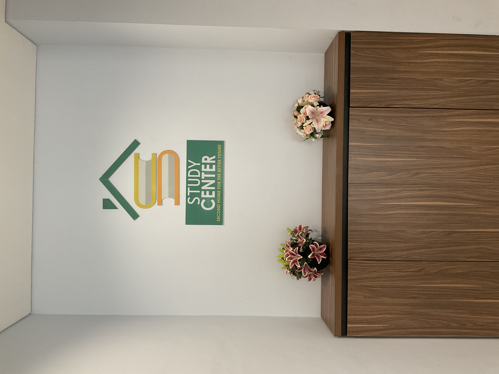
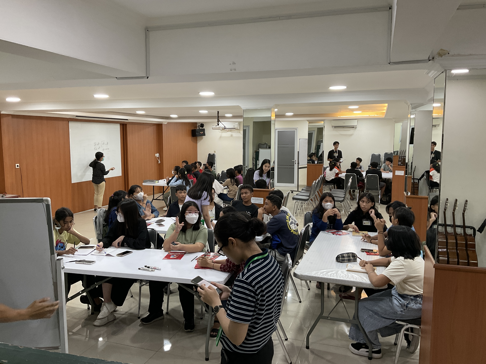

Second Home for a Better Future
Ruang Belajar &
Ruang Berkembang
Terbuka bagi setiap siswa yang ingin berjuang bagi masa depan yang lebih baik.
Tiga Pilar
Fondasi yang menopang setiap langkah pembelajaran di Study Center.
Allah
"Ingatlah akan Penciptamu pada masa mudamu..."
- Pkh. 12:1
Pendidikan
"Sebab Tuhan memberikan hikmat; dari mulut-Nya datang pengetahuan dan pengertian"
- Ams. 2:6
Karakter
"Jadilah terladan bagi orang-orang percaya..."
- 1 Tim. 4:12
Mengapa Study Center Ada?
Study Center adalah sebuah wadah non profit yang berada dibawah naungan Yayasan Bejana Mulia.
Study Center bertujuan untuk:
- Membantu siswa mencapai prestasi yang setara dengan teman sebayanya
- Menyediakan bimbingan belajar gratis dan berkualitas
- Membangun karakter, kedisiplinan, dan ketaatan kepada Tuhan
Kelas-Kelas SCKG
Pilihan program yang dirancang untuk memenuhi kebutuhan akademik dan pengembangan diri siswa.
Program Ekstrakurikuler
Gitar • Bahasa Inggris • Coding
Kembangkan bakat dan keterampilan di luar akademik untuk masa depan yang lebih luas.
Mata Pelajaran Wajib
Matematika SMP • Matematika SMA
Kuasai fondasi akademik yang kuat agar bisa bersaing dan berprestasi di sekolah.
Momen Belajar Bersama
Kelas Ekskul • Kelas Wajib • Pembinaan • Seminar
Lihat berbagai kegiatan belajar, pembinaan dan seminar yang ada di SCKG.
Lihat GaleriSudah Terdaftar di SCKG?
Akses dashboard untuk absensi, jurnal, dan informasi kelas kamu.
📍 Lokasi Study Center Kelapa Gading
Cari Study Center yang tersedia didekat mu.
Study Center Janu Asri
● Sedang Diupdate
📍 Janur Asri IX Blok QK18 No.23,
Kelapa Gading, Jakarta Utara
Study Center Inkopal
● Buka
📍 Ruko Inkopal Blok G 11-12-15,
Kelapa Gading, Jakarta Utara
Study Center
Jakarta Garden City
● Sedang Diupdate
📍 Detail alamat akan segera tersedia.
Study Center Gunung Sahari
● Cabang Utama
📍 Gunung Sahari IV No.6, RT.7/RW.7,
Kec. Kemayoran, Jakarta Pusat
Mengenal Study Center
Kelapa Gading
Rumah kedua bagi setiap pelajar yang ingin tumbuh dan berprestasi.
Tujuan Study Center
Study Center didirikan dengan satu tujuan utama: memastikan setiap siswa memiliki kesempatan yang sama untuk belajar, berkembang, dan berprestasi setara dengan teman-teman mereka.
Kami percaya bahwa keterbatasan finansial tidak seharusnya menjadi penghalang bagi mimpi seorang anak. Dengan menyediakan bimbingan belajar gratis, kami membantu menutup kesenjangan pendidikan dan membuka pintu kesempatan yang lebih luas.
Tiga Pilar
Fondasi yang menopang setiap langkah pembelajaran di Study Center.
Allah
"Ingatlah akan Penciptamu pada masa mudamu..."
- Pkh. 12:1
Pendidikan
"Sebab Tuhan memberikan hikmat; dari mulut-Nya datang pengetahuan dan pengertian"
- Ams. 2:6
Karakter
"Jadilah terladan bagi orang-orang percaya..."
- 1 Tim. 4:12
Visi & Misi
Menjadikan Study Center
sebagai rumah kedua dimana setiap remaja bisa mendapatkan sebuah komunitas yang sehat di luar rumah.
Membentuk
sebuah komunitas remaja yang sehat, positif, dan prestasi ( berkaitan dengan pendidikan, karakter, dan ketaatan kepada Tuhan).
Pendaftaran Peserta
4 langkah mudah untuk bergabung dengan Study Center Kelapa Gading.
Siapkan Persyaratan
Fotokopi kartu pelajar atau rapor terakhir.
Datang ke SCKG
Kunjungi langsung gedung SCKG dan temui kakak pembina / admin yang siap membantu.
Isi Formulir
Lengkapi formulir pendaftaran yang disediakan dengan data diri dan informasi sekolah.
Mulai Belajar!
Setelah terdaftar, kamu langsung bisa mengikuti kelas sesuai jadwal yang ditentukan.
Pendaftaran gratis dan terbuka untuk semua siswa SMP dan SMA yang membutuhkan.
Kelas-Kelas
Study Center
Dua program unggulan untuk pengembangan akademik dan diri.
Ekstrakurikuler
Program pengembangan bakat dan keterampilan untuk memperluas wawasan dan kemampuan siswa.
Gitar
Belajar memainkan gitar dari dasar hingga mahir. Dirancang untuk semua tingkat. Mulai dari yang belum pernah memegang gitar hingga yang sudah memiliki dasar.
- Teknik dasar chord dan melodi
- Membaca not balok dan tabulasi
- Lagu-lagu populer dan klasik
- Kepercayaan diri tampil di depan umum
Bahasa Inggris
Tingkatkan kemampuan Bahasa Inggris secara menyeluruh. Mulai dari percakapan sehari-hari hingga persiapan ujian. Program interaktif dan menyenangkan.
- Speaking & Conversation
- Reading & Comprehension
- Grammar & Writing
- Persiapan ujian sekolah & nasional
Coding
Pelajari dunia pemrograman dari nol. Di era digital ini, kemampuan coding adalah keterampilan masa depan yang wajib dikuasai.
- Dasar logika pemrograman
- HTML, CSS, & JavaScript
- Pengenalan Python
- Proyek mini dan portofolio sederhana
Mata Pelajaran Wajib
Penguatan akademik di mata pelajaran kunci agar siswa percaya diri menghadapi ujian.
Matematika SMP
Pembelajaran Matematika untuk siswa SMP kelas 7–9. Materi disesuaikan dengan kurikulum nasional dan kebutuhan ujian.
Matematika SMA
Pembelajaran Matematika untuk siswa SMA kelas 10–12. Fokus pada pemahaman konsep mendalam dan persiapan ujian nasional serta UTBK.
Membuka kelas
Kelas Study Center dapat berlangsung dengan syarat adanya minimal lima siswa dalam satu kelas. Ini berlaku untuk semua kelas.
Jumlah peserta
Minimal 5 dan maksimal 11.
Dengan tujuan untuk memastikan peserta dapat terbantu dalam pembelajaran dengan kondisi kelas yang memadai.
Bila peserta dalam satu kelas kurang dari 5, kelas tersebut untuk sementara akan ditutup, sampai mencapai minimal 5 peserta kembali.
Demikian syarat juga berlaku untuk membuka kelas baru lainnya.
Selama minat siswa terhadap pelajaran tersebut ada, maka akan kami usahakan untuk membantu.

FAQ
Temukan jawaban atas pertanyaan yang paling sering ditanyakan.
Ya, 100% gratis! SCKG Study Center adalah lembaga nirlaba yang berkomitmen untuk menyediakan pendidikan berkualitas tanpa biaya apapun. Tidak ada biaya pendaftaran, biaya bulanan, maupun biaya tersembunyi lainnya.
SCKG terbuka untuk semua siswa SMP dan SMA yang ingin meningkatkan prestasi belajarnya, terutama bagi mereka yang tidak memiliki akses ke bimbingan belajar berbayar. Pendaftaran langsung di kantor SCKG dan kuota terbatas.
Cara mendaftar sangat mudah:
- Siapkan fotokopi kartu pelajar atau rapor terakhir.
- Kunjungi kantor SCKG Study Center secara langsung.
- Isi formulir pendaftaran yang disediakan oleh tim kami.
- Setelah terdaftar, langsung ikuti kelas sesuai jadwal!
SCKG menyediakan dua jenis program:
- Ekstrakurikuler: Gitar, Bahasa Inggris, dan Coding.
- Mata Pelajaran Wajib: Matematika SMP (kelas 7–9) dan Matematika SMA (kelas 10–12).
Jadwal belajar disesuaikan dengan ketersediaan siswa dan pengajar. Biasanya kegiatan dilaksanakan pada sore hari setelah jam sekolah. Informasi jadwal lengkap diberikan setelah proses pendaftaran berhasil.
Tidak ada persyaratan nilai minimum. SCKG menerima semua siswa yang memiliki semangat untuk belajar dan berkembang. Justru siswa yang kesulitan secara akademik sangat kami prioritaskan.
Pengajar di SCKG adalah individu-individu berdedikasi dengan latar belakang pendidikan yang relevan dan passion untuk mengajar. Mereka diseleksi secara ketat dan berkomitmen memberikan pengajaran terbaik.
Login SC adalah portal online khusus untuk anggota SCKG yang sudah terdaftar. Melalui Login SC, siswa dapat mengakses absensi kehadiran, jurnal belajar harian, jadwal kelas, dan memantau perkembangan belajar mereka.
Kamu bisa menghubungi kami dengan datang langsung ke kantor SCKG Study Center. Tim kami siap membantu menjawab pertanyaan dan memberikan informasi yang kamu butuhkan.
Masih punya pertanyaan lain? Jangan ragu untuk menghubungi kami langsung.